Questions
a)
on veut des informations sur un fournisseur qui s’appelle « Jean-Guy Lauzon j’ai procéder de la manière suivante : j’ai vérifié dans quelle table se trouve « Jean-Guy Lauzon » celle des fournisseurs et j’ai trier par nom mais comme on ne sait pas qu’elle type d’info sur lui j’ai pris les plus pertinent c’est-à-dire son adresse, sa société, et sa fonction. Si j’ai une remarque a faire concernant la requête c’est que je pense faut être plus précis qu’elle information on veut sur lui si on veut juste sa fonction ou bien son adresse et/ou sa société ou il travail.
Code SQL qui permet d'avoir les infos sur Guy Lauzon :
SELECT Fournisseur.Contact, Fournisseur.Fonction, Fournisseur.Adresse, Fournisseur.Societe
FROM Fournisseur
WHERE (((Fournisseur.Contact)="Jean-Guy Lauzon"));
Résultat :
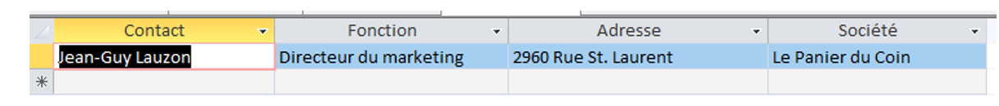
b)
on veut vérifier les coordonnées des client parisiens la méthode par laquelle je suis arrivé au résultat j’ai pris la table client j’ai trier par ville contenant Paris dans les critères et j’ai rajouter leurs coordonnées ainsi que leurs sociétés que j’ai trié par ordre croissant.
Code SQL :
SELECT Clientele.Ville, Clientele.Tel, Clientele.Societe
FROM Clientele
WHERE(((Clientele.Ville)="Paris"))
ORDER BY Clientele.Ville, Clientele.Societe;
Résultat :
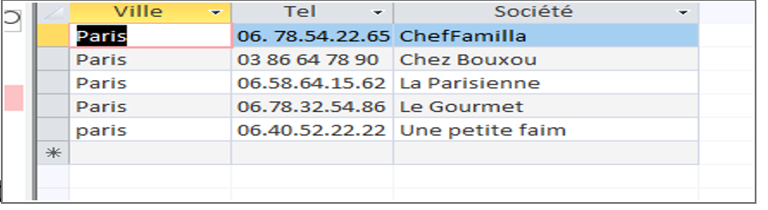
c)
SELECT Produit.NomProd, Fournisseur.Pays, Produit.CoutAchat
FROM Fournisseur INNER JOIN Produit ON Fournisseur.NoFour = Produit.NoFour
WHERE (((Fournisseur.Pays)="USA") AND ((Produit.CoutAchat)<25));
Résultat :
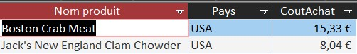
d)
SELECT Produit.NomProd, Produit.CoutAchat, Fournisseur.Societe AS NomFournisseur, Fournisseur.Ville, Fournisseur.Pays
FROM (Produit INNER JOIN Fournisseur ON Produit.NoFour = Fournisseur.NoFour)
INNER JOIN Categorie ON Produit.CodeCateg = Categorie.CodeCateg
WHERE (Categorie.NomCateg = "viandes" OR Categorie.NomCateg = "poissons") AND Produit.CoutAchat > 50;
Résultat :
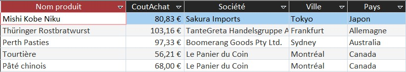
e)
SELECT DISTINCT Clientele.CodeCli, Clientele.Societe, Clientele.Ville, Clientele.Pays
FROM ( ( (Clientele INNER JOIN Commande ON Clientele.CodeCli = Commande.CodeCli)
INNER JOIN DetailCommande ON Commande.[N° commande] = DetailCommande.[N° commande] )
INNER JOIN Produit ON DetailCommande.[Réf produit] = Produit.RefProd ) INNER JOIN Categorie
ON Produit.CodeCateg = Categorie.CodeCateg
WHERE Categorie.NomCateg IN ("viandes", "poissons");
Résultat :
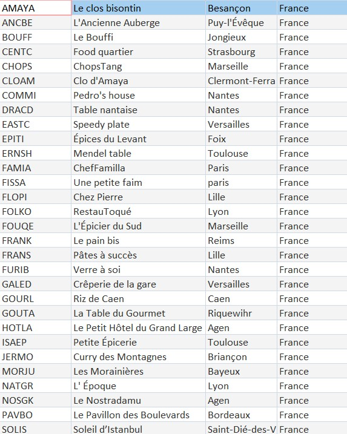
f)
SELECT Produit.RefProd, Produit.NomProd, Produit.QteParUnit
FROM Produit
WHERE Produit.QteParUnit LIKE "*carton*" OR Produit.QteParUnit LIKE "*verre*";
Résultat :
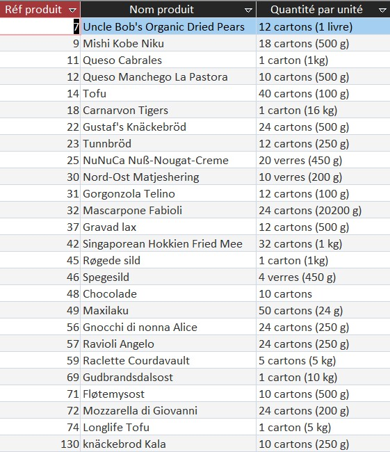
g)
SELECT Clientele.CodeCli, Clientele.Societe, Clientele.MailCli
FROM Clientele
LEFT JOIN Commande ON Clientele.CodeCli = Commande.CodeCli
WHERE Commande.[N° commande] IS NULL;
Résultat :
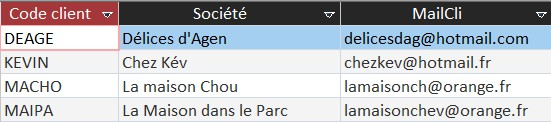
h)
SELECT DISTINCT Categorie.CodeCateg, Categorie.NomCateg
FROM (Fournisseur INNER JOIN Produit ON Fournisseur.NoFour = Produit.NoFour)
INNER JOIN Categorie ON Produit.CodeCateg = Categorie.CodeCateg
WHERE Fournisseur.Pays = "USA";
Résultat :
i)
SELECT TOP 5 Commande.*
FROM Commande
INNER JOIN Clientele ON Commande.CodeCli = Clientele.CodeCli
WHERE Clientele.Contact = 'Max Deschamps'
ORDER BY Commande.DateCde DESC;
Résultat :
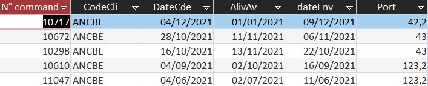
j)
SELECT Fournisseur.*
FROM Fournisseur
LEFT JOIN Produit ON Fournisseur.NoFour = Produit.NoFour
WHERE Produit.NoFour IS NULL;
Résultat :
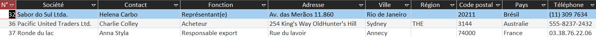
k)
SELECT Fournisseur.*
FROM Fournisseur
LEFT JOIN Produit ON Fournisseur.NoFour = Produit.NoFour
WHERE Fournisseur.Pays <> 'France' AND Produit.NoFour IS NULL;
Résultat :
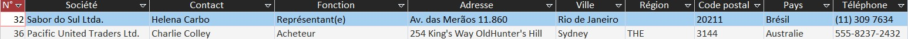
l)
SELECT Clientele.CodeCli, Clientele.Societe, Clientele.MailCli
FROM Clientele
WHERE Clientele.Ville = 'Paris';
Résultat :
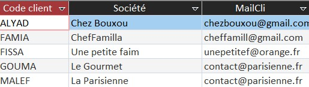